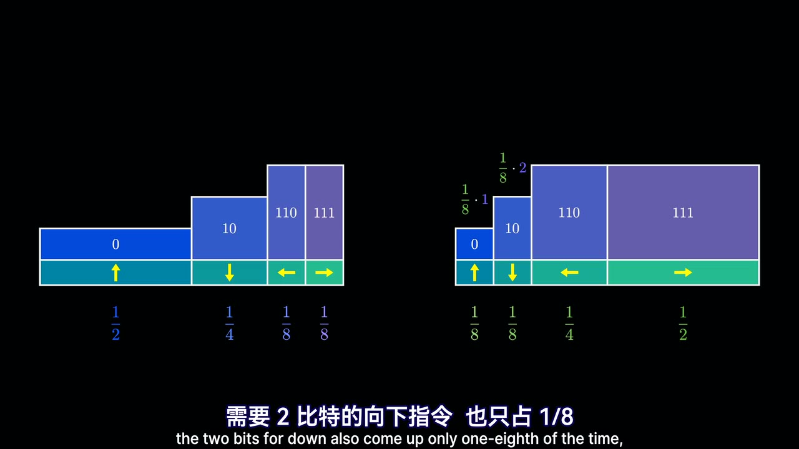

原视频 · 在线回看
点击后联网加载 B 站播放器；本地不下载整段视频。

原视频 · 在线回看
点击后联网加载 B 站播放器；本地不下载整段视频。
原标题：【官方双语】压缩即智能：Part 2，究竟什么是交叉熵？
UP 主：3Blue1Brown
时长：33 分 51 秒
链接：https://www.bilibili.com/video/BV1u7hQ6rEQB/
阅读强度：标准
想象我们要给远处的机器人发送一长串方向指令，只有上、下、左、右四种。每条指令都要变成由 0 和 1 组成的比特序列，机器人收到后再把它还原。最直接的办法是给四个方向各分配两位；如果某个方向出现得特别频繁，我们能否给它更短的编码，让整串消息平均占用更少空间？
这个问题会把我们带到熵和交叉熵。随后，同一个加权平均式又会出现在语言模型训练里：模型给下一个词元分配概率，我们检查实际出现的词元得到了多高的概率。先沿机器人例子算清楚，再回来看模型，就能知道公式中的两个分布分别承担什么作用。
先设定机器人原来的任务：向上的概率为 ，向下为 ，向左和向右分别为 。一个适合这组概率的编码，可以给上、下、左、右分别使用 1、2、3、3 比特。比如选择 0、10、110、111，机器人从左到右读取时能够辨认每条指令的结束位置。
平均长度怎么计算？向上占一半，每次用 1 比特，因此它对平均值贡献 。向下贡献 ，左右各贡献 。四项相加：
结果是平均每条指令 1.75 比特。某一条具体指令依然需要整数个比特；平均值可以是小数，因为它是在许多条指令上计算的。原任务中常见的“上”只用一位，较少见的左右各用三位，频率和长度配合后比固定两位更省。
这里的长度与概率有一个对应关系。若一个事件的概率是 ，它的信息量是 比特；概率 对应 2 比特，概率 对应 3 比特。概率越小，负对数越大，也就是从这套概率的角度看，事件越令人意外。一般概率未必刚好是二的负整数次幂，因此信息量可以是小数；实际编码长消息时，才以整体的平均长度接近这些理想值。
如果用 表示旧任务中第 个方向的概率，那么这组分布的熵是：
这里先对每个方向算 ，再乘以它出现的概率 ，最后把各方向相加。熵可以理解为按这组概率产生长消息时，理想编码的平均信息量。机器人例子里的概率恰好与 1、2、3、3 比特对应，所以得到的熵也是每条 1.75 比特。
现在任务转向右方，但编码器和解码器仍沿用原来的代码。新分布记作 ：上和下各占 ，左占 ，右占 。旧编码的长度没有变：上仍用 1 位，下用 2 位，左右各用 3 位。变化的是每个长度被使用的频率。
逐项计算，新的平均长度为：
右方向现在最常出现，却仍使用旧方案中的 3 位；因此平均长度上升到了每条 2.625 比特。假如双方可以按新分布重新设计代码，最常见的右方向可得到短代码，而较少见的方向使用较长代码。新分布与旧分布只是把同一组概率重新分配，理想平均长度仍为 1.75 比特。
上面的 2.625 就是这次例子中的交叉熵。一般形式写成：
公式里有两个不同角色。 是现实任务中第 个符号实际出现的概率，决定该项在平均值中占多大权重； 是设计编码时采用的概率，决定该符号的理想编码长度 。把“实际出现多频繁”乘以“旧方案给它多长”，再对所有符号相加，就得到使用旧方案处理新任务的平均长度。如果实际可能出现的符号被 赋予零概率，理想交叉熵会变为无穷大。在这个概率恰好对应整数码长的例子里，计算值就是实际代码的平均比特数。
看一个更简单的两事件例子。假设编码依据的 是五五分，那么两种结果的理想长度都是 1 比特。实际分布 即使变成九比一，每一次仍使用 1 比特，所以交叉熵依然为 1。
现在交换角色：编码依据的 是九比一，实际的 却是五五分。旧方案认为第二种结果罕见，给它较长的理想编码；现实中它却出现一半。代入公式得到：
因此两次结果不同：一次是 1，交换之后约为 1.74。交叉熵中的 负责加权， 负责决定每项的信息量，交换它们改变了问题。这里的小数是理想平均信息量；实际单个符号码长和具体编码方案还需另行考虑。
固定现实分布 ，让编码依据 变化，交叉熵在 时达到最小值。此时公式中的 可以换成 ，结果正好是 自身的熵。直观上，按实际频率设计代码，能避免把常见结果长期分配给不必要的长编码。这个结论讨论的是理想概率编码的平均值。
开头提到的一项研究把一小段文档 B 接到文档 A 后，再比较共同压缩与单独压缩 A 的大小。直觉上，压缩器已经从 A 中遇到一些重复模式；如果 B 的模式相近，添加 B 所增加的压缩长度可能较小。研究利用这类信息构造文档之间的距离，用于观察语言间的关系。
这个压缩长度差与交叉熵问的问题相近：针对一种模式建立的编码，遇到另一种模式时表现如何？但它并非公式的精确值。实际文本只是有限样本，gzip 使用寻找重复序列等具体算法，也没有达到理想压缩极限；研究中的距离定义还包含额外细节。因此应把它看成借助共同压缩获得的经验线索，而非两个语言真实分布交叉熵的直接测量。
语言模型把文本切成词元。给定前面的词元，模型为可能出现的下一个词元分配一组概率。训练数据里实际出现了哪个词元，就取模型给这个词元的概率；概率较高时， 较小，概率很低时，这个值较大。把许多位置上的值取平均，就得到一种衡量预测的损失。训练过程调整模型参数，尝试降低这个损失。
举例说，同一个前文“我的名字是”在许多训练样本中后接不同名字。把各名字在这些样本里的比例记为 ，把模型针对同一前文给各名字的概率记为 。每次看到某个名字，都记下它对应的 ；对全部出现求平均，名字出现的比例就成为权重。于是平均损失写成：
这正是交叉熵的形式：数据中的经验频率承担 的角色，模型预测承担 的角色。单个样本也能写成只有实际词元权重为 1 的交叉熵；许多相同前文的样本合起来，则显示出数据中不同后续词元的频率。真实语言环境中，前文可能非常多样，数据有限，训练出来的模型也不保证完全匹配真实语言分布。
为什么选择负对数？一种重要性质是：在固定数据分布、允许预测分布变化时，这种平均损失在预测与数据分布相同时达到最小。对于视频讨论的单项损失形式，若要求这一性质对分布普遍成立，并满足相应光滑条件，在概率之和为 1 的约束下可推导出对数形式。这个结论依赖所选损失形式和假设，并不意味着所有机器学习任务都只能使用交叉熵。
训练中常用自然对数，而压缩例子使用以 2 为底的对数。两者相差一个固定比例：以 2 为底时信息量单位是比特；使用自然对数时数值单位随之改变。改变对数底数不会改变固定数据分布下使该目标最小的预测分布，但具体优化过程还涉及学习率等设置。
模型蒸馏中，一个较小模型尝试学习较大模型的预测。对于同一个前文，大模型给所有候选词元提供一组概率，小模型也给出一组概率；可以用大模型分布作为 ，小模型分布作为 ，计算交叉熵。与只看样本中实际出现的一个词元相比，教师分布还表达了其他候选词元的相对权重。教师也可能出错，小模型学到的内容受教师、数据和训练方式影响。
KL 散度把交叉熵减去 自身的熵：
这两种写法相同：展开右边的对数比，就得到 ，也就是交叉熵减去熵。机器人例子中，新任务仍使用旧编码，多花的平均长度为 比特。这是该例中旧方案相对于适配新分布的理想方案的额外代价。
KL 散度在 时为零，但一般不对称；交换两种分布，数值可能改变。蒸馏时，如果教师分布固定， 对学生模型来说是常数，所以最小化交叉熵与最小化对应方向的 KL 散度具有相同的最优目标。视频将如何把预测器实际变成压缩器留给后续内容；本节建立的是两者共享的概率和信息量关系。